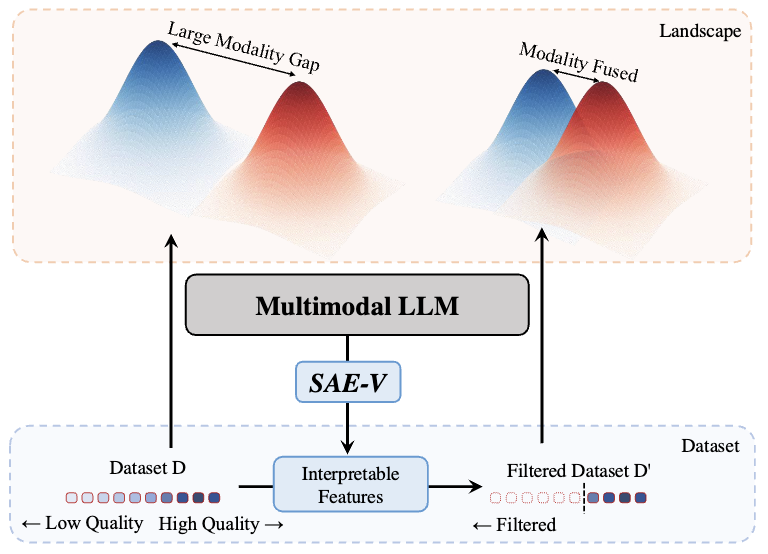
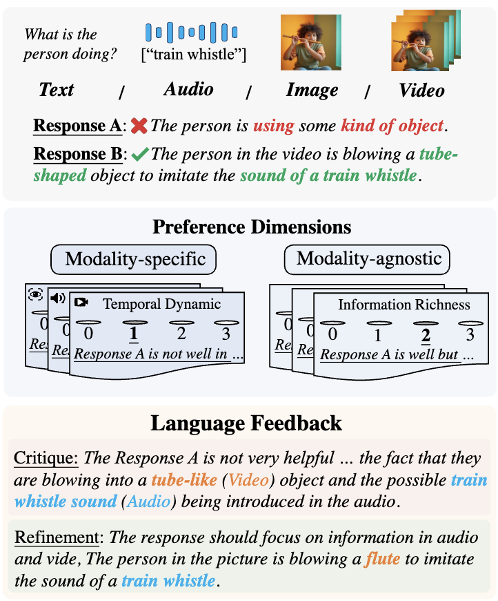
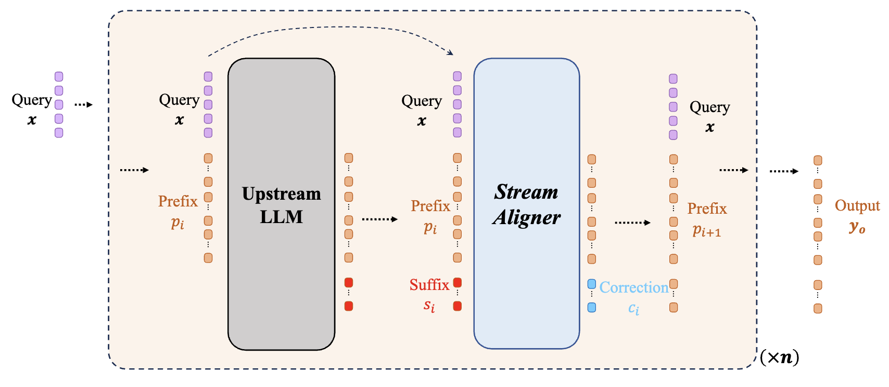
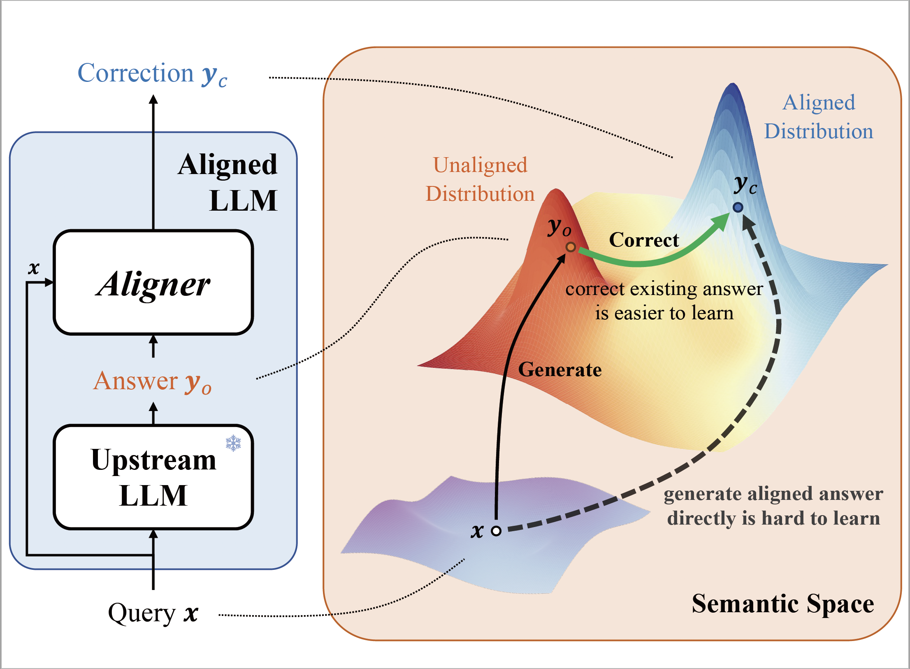

Selected Publications

SAE-V: Interpreting Multimodal Models for Enhanced Alignment
Arxiv, 2025
TL;DR:
We introduce SAE-V, a mechanistic interpretability framework that extends the SAE paradigm to MLLMs to interpret multimodal models and multimodal alignment process. Based on SAE-V, we build advanced data filtering methods to enhance multimodal alignment.

Align Anything: Training All-Modality Models to Follow Instructions with Language Feedback
Arxiv, 2024
TL;DR:
We introduce the Align Anything framework, an end-to-end framework using language feedback to enhance the data, training, and evaluation of all-modality models, with our GitHub repo gaining 2.6K+ stars and featuring comprehensive support for multi-modal alignment, including the first full-parameter DeepSeek-R1 671B fine-tuning, extensible architecture requiring minimal changes for new models, and extensive benchmarking across 30+ evaluation standards.

Stream Aligner: Efficient Sentence-Level Alignment via Distribution Induction
Poster, AI Alignment Track, The 39th Annual AAAI Conference on Artificial Intelligence, 2025
TL;DR:
We introduce the Streaming Distribution Induce Aligner (Stream Aligner), a novel alignment paradigm that combines efficiency with enhanced performance in various tasks throughout the generation process.

Aligner: Efficient Alignment by Learning to Correct
Oral Presentation, The 38th Annual Conference on Neural Information Processing Systems, 2024
TL;DR:
We introduce Aligner, a novel and simple alignment paradigm that learns the correctional residuals between preferred and dispreferred answers using a small model.